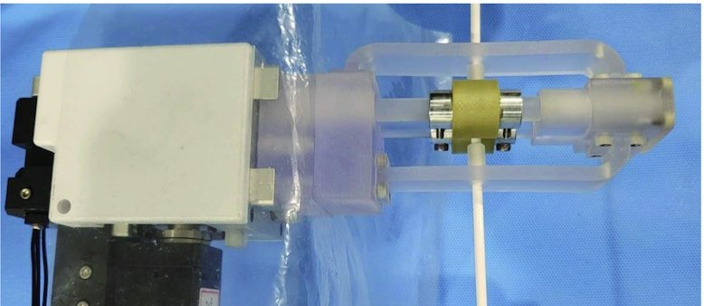

Academic bedside robots · kaistfeeder_baek2022
KAIST feeder
KAIST two-DOF buckling-prevention feeder for robotic catheterization

1 / 7


- Family
- Academic bedside robots (academic)
- Devices
- 3.4 mm Pebax guide-catheter tube
- Degrees of freedom
- 2 (translation + rotation with two driving-shaft modules)
- Push
- Friction rollers
- Twist
- Rotating drive unit
- Tested up to
- Bench
- Sim-to-real
- None found — No simulation-trained controller found for this robot.
Testing
- Highest level
- Bench
- What was tested
- bench testbeds and a robot-system buckling test; phantom testing stated as future work (baek2022_design)
- Key numbers
- rollers 20 mm, spacing 22.5 mm, grip force 5.90 N; feeder max 4.01 N / 6.74 mNm at 3 mm/s (requirement 4.5 N / 8 mNm); translation RMSE 1.68 mm (max 3.05 mm), rotation RMSE 1.23 deg; insertion ratio 0.992 (baek2022_design, OUP HTML)
Mechanism
- Push (translation)
- friction-roller
- Twist (rotation)
- second driving-shaft module rotates the roller module (two motors total)
- Device range
- 3.4 mm tube tested
- Target anatomy
- endovascular catheterization (bench)
Sensing and interface
- Force sensing
- none on the catheter (testbed load cells for evaluation)
- Leader and haptics
- N.R.
- Imaging
- N.R.
- Sterility
- disposable roller module; draped attachment to the robot (Fig. 14)
Size
- Footprint (mm)
- N.R.
- Mass (kg)
- N.R.
Simulation
- Simulation model
- none found
- Sim-trained controller
- none found
Versions
- Lineage
- single version (baek2022_design)
Sources
- Design and analysis of feeder mechanism for buckling prevention in robotic catheterization · Journal of Computational Design and Engineering, 2022 · doi:10.1093/jcde/qwac065 [baek2022_design]
Notes
- Notes
- A distal feeder module rather than a whole robot; distinct from A2's kaist_cho2022 (Dong Eui Chang).
This record
- Read level
- partial — partial (OUP full-text HTML via WebFetch)
- Picture
- baek2022_design Fig. 14(c), OUP view-large image qwac065fig14.jpeg (page https://academic.oup.com/jcde/article/9/4/1467/6660650) ↗ — licence: CC BY; grade C
- Picture changes
- cropped to panel (c) above the 'drape' label; not upscaled
- Found by
- gap: Gap searches for robots the other searches missed.
- Data
- JSON · YAML:
records/robots/kaistfeeder_baek2022.yaml - Correction
- Suggest a correction [repository not created yet]